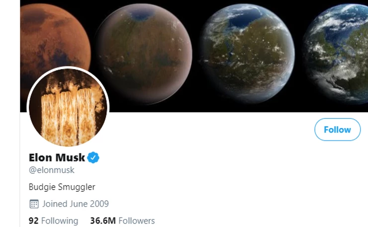

We are surrounded by technology so much that we crave for actual communication with authentic people. We go on a website and we see a bot trying to interact with us. We type a reply on LinkedIn and we see AI giving us suggestions about our reply even before we start typing. Technology is amazing, it has made lives simpler, but it has reduced the actual human connection.
How many people do you think actively search for a brand on social media to see what they have put up? Few, right? This is because of their monotonous messaging that lacks the human touch. Even though the message is shared by a human, it still sounds robotic because of the way it is communicated.
Establish a relationship with your brand that encourages individuals to actively look forward to your communication via social media, website and any other communication channel. This can be achieved by Humanising your brand. Humanising your brand means adding that element of familiarity, a sense of belonging and relatability to your brand.
As much cliché as it may sound, it is true. Your employees, your customers, and every single human being that your brand is associated with can give you traffic. Everybody in this digital age has a social media profile, and when you encourage people to talk actively about you on social media, they become advocates of your brand. When an employee or customer promotes you, people are more likely to trust you than, when you would have reached them through any other way.
Brands spend an exorbitant amount of money on influencer marketing. But, they fail to pay attention to the influencers in the house who are recognised by the media, like the CEO or CFO of the organisation. Leveraging the audience of your in-house influencer is one of the significant ways to humanise your brand.
Check out his Twitter handle: Elon Musk
Building a community around your product is the best thing that you can probably do. Because, the larger the community, the better your brand's reach. Your community members are the people who are loyal to your brand. The community acts as an engaging group of individuals who strive to help each other. One such example is Air bnb. They have a dedicated section for hosts where they can share their travel stories, tips & tricks & destination details.
Storytelling, as we all know, is by far one of the finest ways to connect with your audience. Tell people how your product helped people to solve their problems. Share client testimonials in the form of stories.
Stop using stock photos on your website! Stock photos don’t add that relatability factor. It is much better to use actual photographs of your employees. Show those smiling faces to the world. It helps people to sense transparency from your brand, which in turn helps them to see your brand as something more than your logo. Only then they will start to recognise you as a community.
Privy.com has used their own faces to build reliability and trust in their brand.
Actively jump into discussions about your brand. Try to talk to people when they post about your brand, even if it is a negative review or rant, try to understand them and offer a solution. This assures people that you are listening to them and actively responding to their feedback. Also, it gives them a sense of happiness when they get that sweet message from their brand, and they don’t feel like there is nobody on the other side of the screen.
How smartly KFC used this negative tweet to promote their upcoming launch of 'better fries' is epic! It simply confirms that for a clever marketer any comment is a good comment and how important to jump into a conversation with your clients wherever they hang out.
Staying relevant is one of the major problems faced by brands. This can easily be overcome if they add a pinch of relevant humour to their communication. Humour encourages people to engage with your content. It also enables people to see you as not just a business focused on selling their product, but also a fun human. Netflix has been doing an excellent job of adding humour to their communication.
You need to think from the shoes of the customer, how you can make each and every interaction with them more human. People love to see that your brand is also very relatable and portrays in a very approachable manner.


 +91 77366 95526
+91 77366 95526
 info@blusteak.com
info@blusteak.com